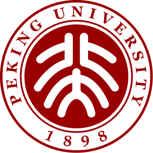

本科学生 |
我目前为北京大学物理学院本科学生，将于2023年7月从北京大学 物理学院获得学士学位。
我的研究兴趣主要包括: 纳米材料科学与技术，光电功能材料与器件等。
|  | 本科 北京大学 (2019.9 ~ 2023.7)
|
一种高效低能耗移动数据采集与无线充电策略
钟萍，徐爱昆，张艺雯，李亚婷，张一鸣，黄家玮，王建新
软件学报, 2021. [PDF]
EMPC: Energy-Minimization Path Construction for Data Collection and Wireless Charging in WRSN
Ping Zhong, AiKun Xu, Shigeng Zhang, Yiming Zhang and Yingwen Chen
Pervasive and Mobile Computing (PMC), 2021. [JCR Q2][PDF]
An Optimal Deployment Scheme for Extremely Fast Charging Stations
Ping Zhong, AiKun Xu, Yilin Kang, Shigeng Zhang and Yiming Zhang
Peer-to-Peer Networking and Applications (P2PNA), 2022. Accepted, [JCR Q2][PDF]
An Optimization Deployment Scheme for Static Charging Piles Based on Dynamic of Shared E-Bikes
Ping Zhong, AiKun Xu, Yuanming Chen, Feng Gao and Guihua Duan
2019 15th International Conference on Mobile Ad-Hoc and Sensor Networks (MSN-19). [CCF C][PDF]
THAN: Multi-Modal Transportation Recommendation with Heterogeneous Graph Attention Networks
AiKun Xu, Ping Zhong, Yilin Kang, Jiongqiang Duan, Mingming Lu and Chuan Shi
IEEE Transactions on Intelligent Transportation Systems (T-ITS), 2022. Accepted, [JCR Q1]
GTTE: A GPS Trajectory based Travel Time Estimation Method Through Spatio-Temporal GNN
Ping Zhong, Anning, Wang, AiKun Xu, Mingming Lu, Senzhang Wang and Yingwen Chen
Under Review,
基于团划分的静态充电桩部署方法
钟萍, 徐爱昆, 奎晓燕, 张艺雯
国家发明专利, 公开号:CN109872070A
具有个性化和情境感知的多模态交通推荐算法研究(No. 2021zzts0735)
负责人; 经费:1万元
中南大学研究生自主探索项目
面向厂区货车的融合式导航系统研究(No. GCX2020347Y)
负责人; 经费:1万元
中南大学校企合作项目
面向机器人的适应性智能导航与场景感知(No. 2021zzts0753)
参与人; 经费:1万元
中南大学研究生自主探索项目